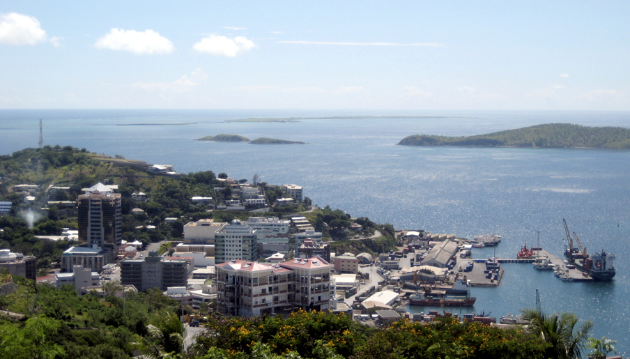

Oceania

A Oceania está localizada entre os oceanos Índico e Pacífico e é formado por milhares de ilhas de diversas extensões, desde pequenos atóis coralígenos até a Austrália, pouco menor que o Brasil. Ocupa ao todo uma área de mais de 8.900.000 quilômetros quadrados nos quatro hemisférios. Além de inúmeras possessões não independentes, administradas por países europeus, pelos Estados Unidos ou por nações desenvolvidas do continente, a Oceania inclui 14 Estados soberanos, entre os quais se destacam a Austrália e a Nova Zelândia.
A Oceania é chamada de Novíssimo Mundo, pois foi o último continente a ser descoberto pelos europeus, que lá chegaram no século XVII. Só no fim do século XVIII teria início a colonização, com a chegada de prisioneiros britânicos obrigados a trabalhar na lavoura.Quase todas as ilhas da Oceania têm a população composta majoritariamente por indígenas. Excetuam-se a Austrália e a Nova Zelândia, em que os brancos europeus - entre os quais predominam os de origem britânica - constituem a maioria dos habitantes. Os grupos humanos melanésios, micronésios e polinésios costumam migrar de um arquipélago para outro em busca de melhores condições de trabalho, havendo, por isso, alto grau de miscigenação..
Devido ao grande número de ilhas, costuma-se dividir o continente em: Australásia: Austrália, Nova Guiné e, geograficamente, porém não cultural e historicamente, a Nova Zelândia; Melanésia: Papua-Nova Guiné, Ilhas Salomão, Vanuatu e Fiji; Micronésia: Kiribati, Palau, Estados Federados da Micronésia, Ilhas Marshall e Nauru; Polinésia: Tonga, Samoa, Tuvalu e, historicamente e culturalmente, a Nova Zelândia.
PRINCIPAIS PAÍSES
- Austrália
- Nova Zelândia
- Papúa-Nova Guiné
- Ilhas Salomão
- Fiji
Austrália

é um país do hemisfério sul, localizado na Oceania, que compreende a menor área continental do mundo ("continente australiano"), a ilha da Tasmânia e várias ilhas adjacentes nos oceanos Índico e Pacífico. O continente-ilha, como a Austrália por vezes é chamada, tem 7 692 024 quilômetros quadrados e está sobre a placa indo-australiana. Rodeado pelos oceanos Pacífico e Índico, o continente é separado da Ásia pelos mares de Arafura e Timor. Apesar de ser considerado o "menor continente do mundo" a Austrália é o sexto maior país em área total.
A Austrália tem uma economia de livre mercado com elevado PIB per capita e baixa taxa de pobreza. a Austrália é a décima terceira maior economia do mundo e tem o décimo terceiro maior PIB per capita, maior que o do Reino Unido, Alemanha, França, Canadá e Japão, e em par com o dos Estados Unidos. O país foi classificado em segundo lugar no Índice de Desenvolvimento Humano (IDH) de 2013 das Nações Unidas, em primeiro lugar no Índice de Prosperidade de 2008 da Legatum e em sexto lugar no Índice de Qualidade de Vida da The Economist de 2005.
O turismo é um importante setor da economia australiana. Em 2003/04, a indústria do turismo representou 3,9% do PIB da Austrália no valor de cerca de 32 bilhões de dólares australianos para a economia nacional. A Austrália é um país continental cercado pelos oceanos Índico e Pacífico. Suas principais cidades, Sydney, Brisbane, Melbourne, Perth e Adelaide, são costeiras. Sua capital, Camberra, não é litorânea. O país é conhecido pela Sydney Opera House, pela Grande Barreira de Coral, pelo vasto deserto interior chamado Outback e por espécies animais únicas, como cangurus e ornitorrincos.
Nova Zelândia
é um país insular, oficialmente pertencente à Oceania, no sudoeste do Oceano Pacífico, formado por duas massas de terra principais (comumente chamadas de Ilha do Norte e Ilha do Sul) e por numerosas ilhas menores, sendo as mais notáveis as ilhas Stewart e Chatham. O nome indígena na língua maori para a Nova Zelândia é Aotearoa, normalmente traduzido como "A Terra da Grande Nuvem Branca".
Nova Zelândia tem uma moderna, próspera e desenvolvida economia de mercado, com um produto interno bruto (PIB) em paridade do poder de compra (PPC) per capita estimado pelo Fundo Monetário Internacional (FMI) em cerca de US$ 26.966. A Nova Zelândia havia sido classificada como o quinto país "mais desenvolvido" do mundo pelo Índice de Desenvolvimento Humano (IDH) de 2011 e caiu para 16º na classificação de 2018, elaborado pelo Programa das Nações Unidas para o Desenvolvimento (PNUD), e Ficou em 4º lugar no Índice de Liberdade Econômica de 2011, publicado pela Heritage Foundation.
O turismo é uma importante indústria na Nova Zelândia, contribuindo com 9% do produto interno bruto (PIB) doméstico do país em 2010. A Nova Zelândia é um país no sudoeste do Oceano Pacífico formado por 2 ilhas principais, ambas marcadas por vulcões e glaciações. Na capital Wellington, na Ilha Norte, fica o museu nacional Te Papa Tongarewa. O imponente Monte Victoria, em Wellington, o Fiordland, na ilha Sul, e os Lagos do Sul foram cenário da mítica Terra Média nos filmes da série "O Senhor dos Anéis", de Peter Jackson.
Papua-Nova Guiné
Papua Nova Guiné, situado na Oceania, ocupa a aproximadamente 50% da segunda maior ilha do planeta (Nova Guiné), além do arquipélago de Bismarck e várias ilhas na Melanésia. Seu território está localizado ao norte da Austrália e possui uma única fronteira terrestre: a Indonésia, a oeste. Algumas ilhas de Papua Nova Guiné correm sério risco de serem submersas pelo aumento do nível do mar, provocado pelo aquecimento global.
A agricultura é responsável por captar mais de 70% da população economicamente ativa no país, em especial a de subsistência. Esse fato influencia na distribuição populacional: a maioria dos habitantes reside em áreas rurais (87,5%). A economia baseia-se na produção e exportação de ouro, cobre, petróleo, café e cacau.
Papua Nova Guiné, no sudoeste do Oceano Pacífico, abrange a metade oriental de Nova Guiné e suas ilhas em alto-mar. Com uma imensa diversidade cultural e biológica, o país é conhecido por suas praias e seus recifes de corais. Em terra, há vulcões ativos, o Monte Wilhelm, em granito, a densa floresta tropical e rotas para caminhadas, como a Trilha de Kokoda. Também há diversas tribos indígenas, sendo que muitas das quais têm idioma próprio.